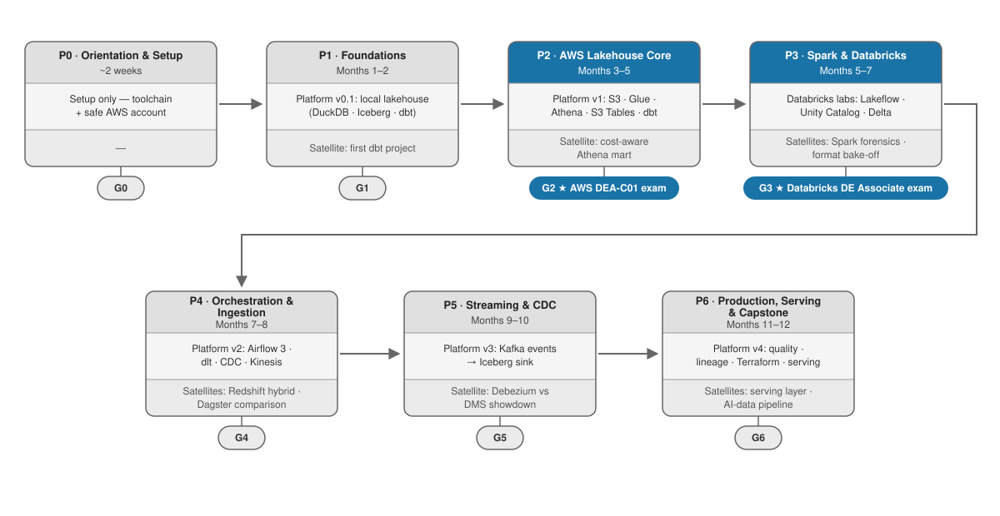

The Data Engineer Framework¶
A 12-month path to becoming a data engineer. You build one real platform, phase by phase — a full data stack, end to end: ingestion, lakehouse storage, transformation, orchestration, quality, serving. You move forward by passing gates (things you built and can demo), not by watching the calendar.
By month 12 you have the kind of platform real data teams write public journey posts about — and you'll have written yours.
Built for someone with solid SQL and basic cloud familiarity, spending 6–10 hours a week. Different starting point? See placement. Curious why it's built this way? Every design decision is explained in WHY.md.
▶ Start here¶
New here? Don't read this whole repo. Open GUIDE.md — it walks you through your first day and every phase after it, step by step.
- Do the Day 0 setup (about 30 minutes).
- Open Phase 0 and follow the phase loop.
- Track everything in PROGRESS.md.
The route¶

| Phase | When | What you build | Gate |
|---|---|---|---|
| 0 — Orientation & Setup | ~2 weeks | Working toolchain, guard-railed AWS account | G0 · demo + terms quiz |
| 1 — Foundations | Months 1–2 | A lakehouse on your laptop (DuckDB · Iceberg · dbt) | G1 · local demo |
| 2 — AWS Lakehouse Core | Months 3–5 | The same lakehouse on AWS (S3 · Glue · Athena · S3 Tables) | G2 ⭐ AWS DEA-C01 exam |
| 3 — Spark & Databricks | Months 5–7 | Spark fluency + Databricks labs | G3 ⭐ Databricks DE exam |
| 4 — Orchestration & Ingestion | Months 7–8 | Airflow 3, dlt, CDC, Kinesis on the platform | G4 · orchestrated demos |
| 5 — Streaming & CDC | Months 9–10 | Kafka event path → lakehouse; Debezium-vs-DMS showdown | G5 · streaming demos |
| 6 — Production, Serving & Capstone | Months 11–12 | Quality, lineage, Terraform, serving layer, AI pipeline | G6 · capstone + journey post |
Each phase also builds one or two satellite projects (separate repos) for tool diversity — Databricks, Dagster, Debezium, ClickHouse + Superset, an AI/RAG pipeline.
How you work a phase¶
Every phase has the same shape. You repeat this loop seven times:
- Read the phase's new terms in GLOSSARY.md.
- Work through the Learn table — each resource comes with an exercise; some rows offer a video alternative (pick one lane, never both).
- Build: grow the platform, then build the phase's satellite.
- Pass the gate: demo your work, quiz yourself, log evidence in PROGRESS.md.
- Move to the next phase.
The full click-by-click version is in GUIDE.md. If you use Claude Code, six built-in skills (/start-phase, /quiz, /gate-check, /satellite-brief, /explain, /resume) automate the repetitive parts — see the guide.
Tracking progress¶
PROGRESS.md is your only tracker. Every phase has an evidence table there; an item counts only when you link proof — a repo, a screenshot, a video. Coming back after a break? Use the comeback ritual instead of starting over.
What it costs¶
AWS: at most $25/month, protected by a budget alarm you set on day one. Exams and courses: ~$310–455 for the whole year. The complete accounts-and-money list is in GUIDE.md.
Repo map¶
| Where | What |
|---|---|
GUIDE.md |
The operating manual — exactly what to do, in order |
PROGRESS.md |
Your evidence tracker (fork it, make it yours) |
GLOSSARY.md |
Every term, plainly defined, tagged by phase |
phases/ |
The seven phase specs — the default path |
reference/ |
Consulted, not read cover-to-cover: WHY · TOOLS · DATASETS · CERTS · COURSES · LEARNERS · SOURCES |
prompts/ |
The satellite-requirements generator + a worked example |
.claude/skills/ |
The six built-in helper skills |
sources/research/ |
The research reports behind every claim |
CHANGELOG.md · CONTRIBUTING.md · LICENSE |
Revision history · how to contribute · CC-BY-4.0 |
Tool versions and cert blueprints churn: each phase lists what to re-verify before starting, and a weekly link-check guards the references. Forking or entering midway? Start at reference/LEARNERS.md.